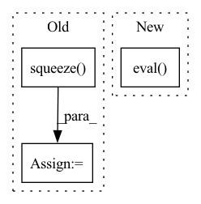

Pattern ID :27668
Before Change
pred_mask_vis = colorize_semseg(pred_mask, num_classes=SYNPICK_CLASSES) // [T, 3, h, w]
frames_colorized = colorize_semseg(postprocess_mask(frames_seg.squeeze()), num_classes=SYNPICK_CLASSES).unsqueeze(dim=0) // [1, T, 3, h, w]
frames_colorized_vis = postprocess_img(frames_colorized.squeeze(dim=0) ) // [T, 3, h, w]
input_colorized = frames_colorized[:VIDEO_IN_LENGTH]
colorized_then_pred = pred_colorized_mask_model.pred_n(input_colorized, pred_length=VIDEO_PRED_LENGTH)After Change
seg_model.eval()
pred_rgb_model.eval()
pred_mask_model.eval()
pred_colorized_mask_model.eval()
// DATASET
data_dir = os.path.join(cfg.data_dir, "test", "rgb")In pattern: SUPERPATTERN
Frequency: 3
Non-data size: 3
Instances Fragment ID: 82101125
Project Name: ais-bonn/vp-suite
Commit Name: 13016d4ab8ba4f8e7ee087155a6c5171f4d00ba3
Time: 2021-08-02
Author: boltres@ais.uni-bonn.de
File Name: scripts/visualize_4_way.py
M Class Name: AnonimousClass
N Class Name: AnonimousClass
M Method Name: visualize_4_way(1)
N Method Name: visualize_4_way(1)
M Parent Class:
N Parent Class:
M File Name: scripts/visualize_4_way.py
N File Name: scripts/visualize_4_way.py
M Start Line: 16
M End Line: 73
N Start Line: 17
N End Line: 74
Before Change
threshold_weight = torch.where(mixture_amplitude > threshold, torch.ones_like(mixture_amplitude), torch.zeros_like(mixture_amplitude))
estimated_sources_amplitude = model(mixture_amplitude, threshold_weight=threshold_weight, n_sources=n_sources, iter_clustering=iter_clustering) // TODO: Args, threshold
estimated_sources_amplitude = estimated_sources_amplitude.squeeze(dim=0)
estimated_sources = estimated_sources_amplitude * torch.exp(1j * mixture_phase)
estimated_sources = istft(estimated_sources, n_fft, hop_length=hop_length, window=window, onesided=True, return_complex=False, length=T)
print("Finished separation...")After Change
// Separate by DNN
model = DANet.build_model(model_path, load_state_dict=True)
wrapper_model = DANet.TimeDomainWrapper(model, n_fft, hop_length=hop_length, window_fn=window_fn)
wrapper_model.eval()
threshold = args.threshold
n_sources = args.n_sources
iter_clustering = args.iter_clustering Fragment ID: 82101136
Project Name: tky823/dnn-based_source_separation
Commit Name: 7ae4e81c6252c522109683039db075453a6e53fb
Time: 2021-12-20
Author: delta9guitar97@gmail.com
File Name: egs/tutorials/danet/local/demo.py
M Class Name: AnonimousClass
N Class Name: AnonimousClass
M Method Name: process_offline(6)
N Method Name: process_offline(6)
M Parent Class:
N Parent Class:
M File Name: egs/tutorials/danet/local/demo.py
N File Name: egs/tutorials/danet/local/demo.py
M Start Line: 72
M End Line: 106
N Start Line: 72
N End Line: 94
Before Change
image, gt_mask = test_dataset[n]
image_vis = image.astype("uint8")
gt_mask = gt_mask.squeeze()
if seg_model is not None:
x_tensor = torch.from_numpy(image).to(DEVICE).unsqueeze(0)
pr_mask = best_model.predict(x_tensor)After Change
image_vis = image.astype("uint8")
if seg_model is not None:
seg_model.eval()
with torch.no_grad():
x_tensor = torch.from_numpy(image).to(DEVICE).unsqueeze(0)
print(x_tensor.shape)
pr_mask = seg_model.predict(x_tensor) Fragment ID: 82101122
Project Name: ais-bonn/vp-suite
Commit Name: 36b68bc67b166214b4c2975c8394f80bea8a212a
Time: 2021-07-15
Author: boltres@ais.uni-bonn.de
File Name: visualize.py
M Class Name: AnonimousClass
N Class Name: AnonimousClass
M Method Name: visualize(2)
N Method Name: visualize(2)
M Parent Class:
N Parent Class:
M File Name: visualize.py
N File Name: visualize.py
M Start Line: 16
M End Line: 41
N Start Line: 16
N End Line: 33